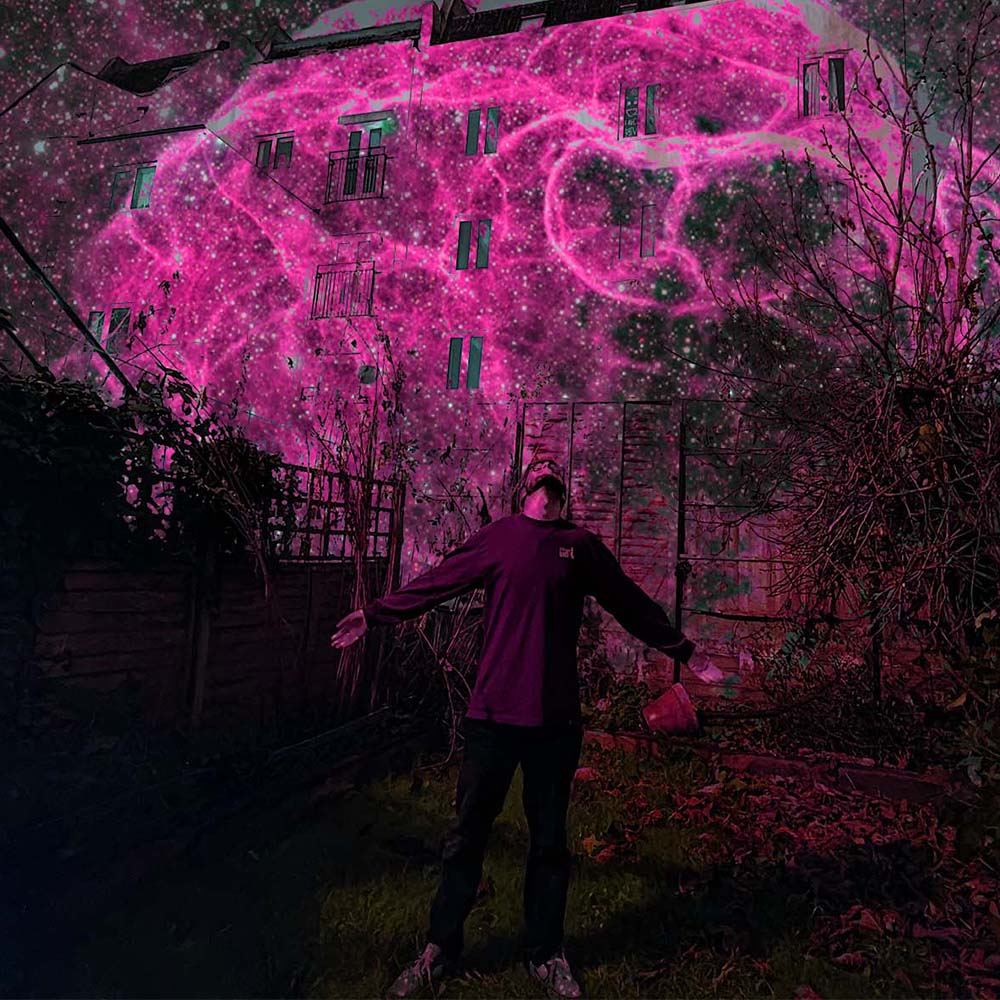
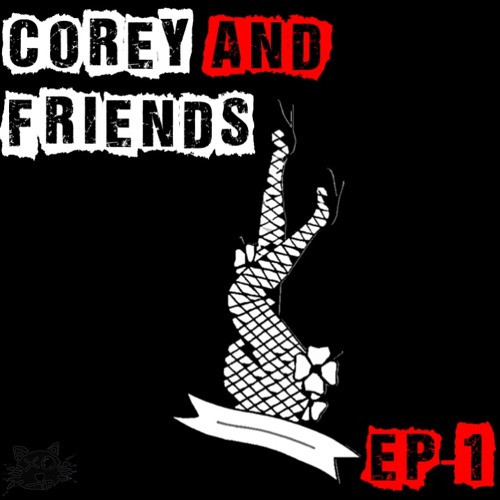
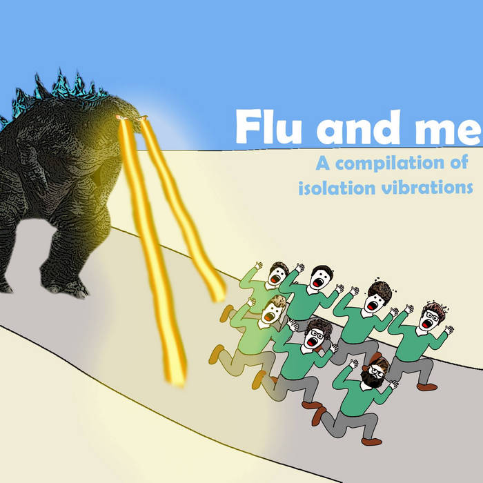

Music

Cosmic - a psychedelic trip hop music project
Scrub - fast and fun punk from two academics

Corey and Friends EP - Guest performances as a vocalist

Me and Flu: A compilation of isolation vibrations - songs made with friends in the Covid-19 Pandemic
Go to the Homepage
![A promo photograph I made of myself and Corey Ford to advertise our punk band Scrub. It is a photo of the two of us (two white males, one with curly hair and beardless, the other with short hair and a beard, in graduation gowns. Corey has sunglasses on and is stood up in a power pose, I am laughing and am half lent over and smiling) celebrating at our graduation next to a sign for the university. I have superimposed the word 'Scrub' onto the background. There is a posterised effect over the image.](images/music/scrub.png)